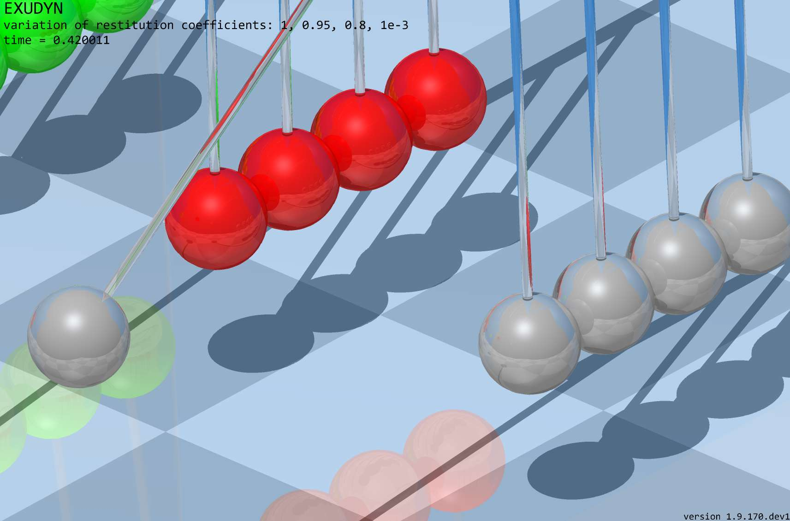
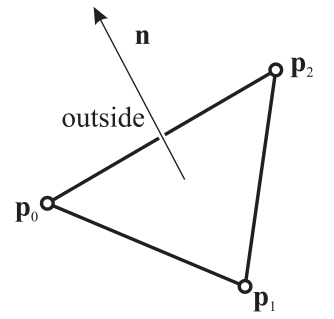
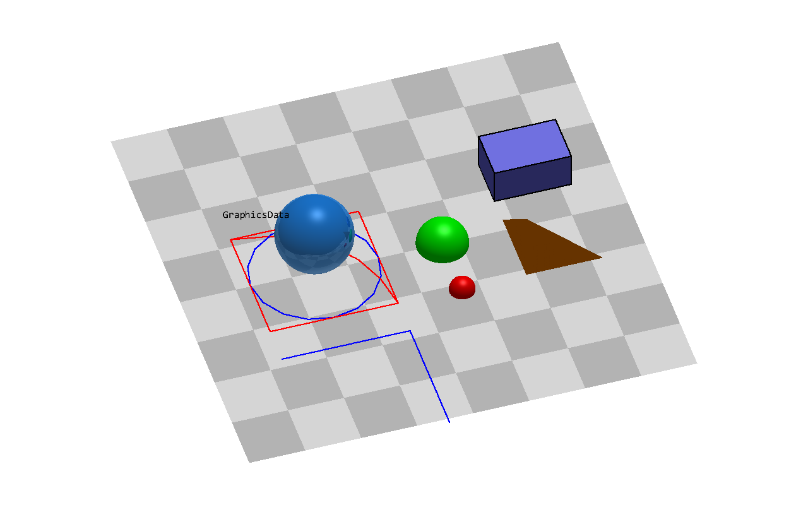
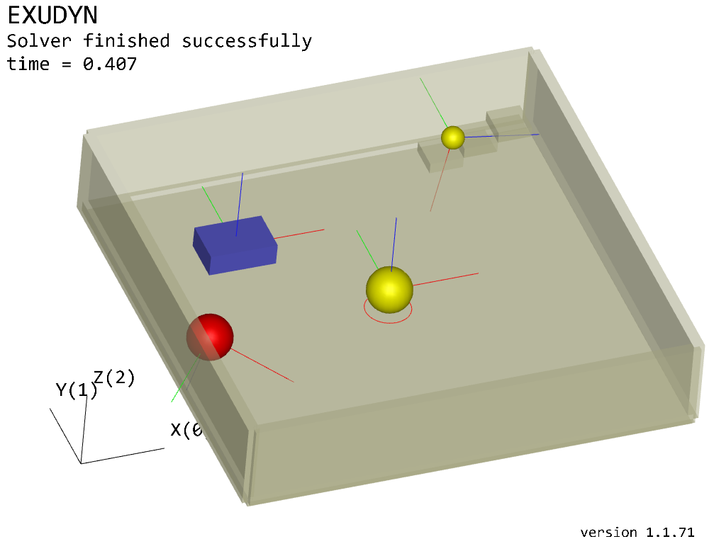
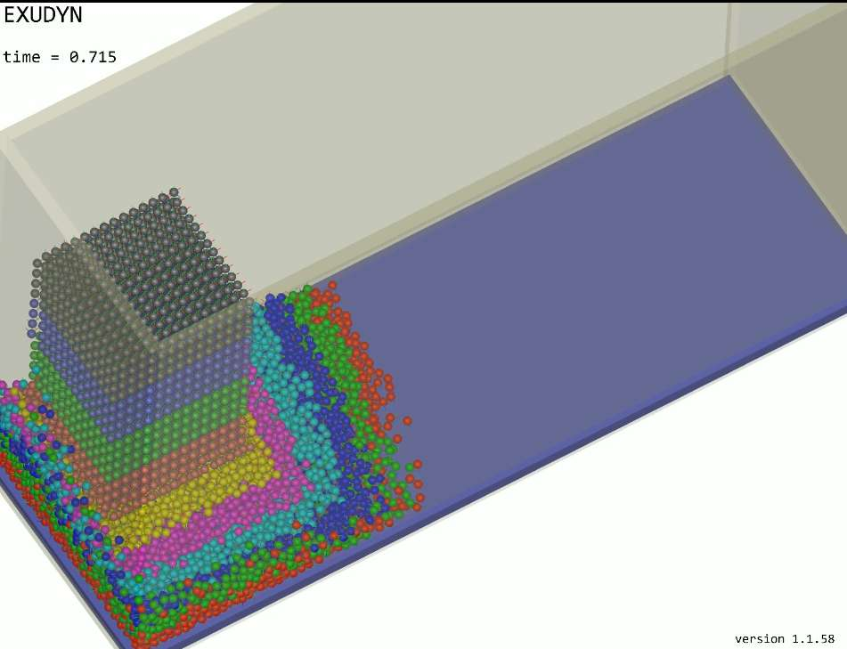

Advanced topics
This section covers some advanced topics, which may be only relevant for a smaller group of people. Functionality may be extended but also removed in future
Graphics pipeline
There are basically two loops during simulation, which feed the graphics pipeline. The solver runs a loop:
compute step (or set up initial values)
finish computation step; results are in current state
copy current state to visualization state (thread safe)
signal graphics pipeline that new visualization data is available
the renderer may update the visualization depending on
graphicsUpdateIntervalinvisualizationSettings.general
The openGL graphics thread (=separate thread) runs the following loop:
render openGL scene with a given graphicsData structure (containing lines, faces, text, …)
go idle for some milliseconds
check if openGL rendering needs an update (e.g. due to user interaction)
\(\ra\) if update is needed, the visualization of all items is updated – stored in a graphicsData structure)
check if new visualization data is available and the time since last update is larger than a presribed value, the graphicsData structure is updated with the new visualization state
Raytracing
For offscreen rendering (e.g. on a supercomputer without and video adapter), for offscreen AI-research on multiple cores, and in order to compensate the limited functionality (but high compatibility) of OpenGL 1.3, an option for CPU-based software rendering (raytracing) has been added. This allows to include shadows and transparency correctly, with additional support for reflections, refraction, emission, fog and materials. In the future, textures may be added as well.


Fig. 7 Example image of raytraced renderer view.
The basic things to know are:
Raytracing settings are collected in
SC.visualizationSettings.raytracer(in the following, we omit ‘SC.visualizationSettings’).Raytracing is activated by setting
raytracer.enable=True. Please make sure that you start with small render window sizes / complexity first.The render window size is adjusted by
window.renderWindowSize. Be careful with this settings.Adjust the
raytracer.numberOfThreadsfor optimal performance, useraytracer.verboseto see render times for different settings. For testing, useraytracer.imageSizeFactor>1to decrease the raytracer’s resolution (with same image size), whileopenGL.multiSamplingwill increase the resolution (anti-aliasing). Note that switching fromopenGL.multiSampling=1andraytracer.imageSizeFactor=4toopenGL.multiSampling=3andraytracer.imageSizeFactor=1increases computational costs by a factor \(4\times 4\times 3\times 3 = 144\). Use only one light, if sufficient (setopenGL.light1.enable=False).Scene, lights, shadow, clipping plane, etc. settings are taken form OpenGL settings and directly used in the software renderer, like
openGL.light0.position, theshadowof each light,openGL.perspective,openGL.clippingPlaneNormal,openGL.showLines, etc.;some settings are in general, like
general.backgroundColororgeneral.drawWorldBasis;In order to see the advantages of the software renderer, materials have to be used, see below.
Materials:
Materials have the type
VSettingsMaterial, see description in VSettingsMaterial, for adjusting color, reflectivity, shininess, alpha-transparency, etc.;Materials can only be used within triangulated geometries (GraphicsData
TriangleList) using a material-flag in the color, likegraphics.Sphere(..., color=graphics.material.chrome). In the RGBA color, the alpha-channel is replaced by a material index which starts at 1000 (where 1000 represents material index 0). Note that in the regular OpenGL-rendering, alpha\(>\)1 is equivalent to alpha\(=\)1. The first 10 materials are linked toraytracer.material0 ... raytracer.material9.The material’s
baseColoris used if the color red-channel is set to \(-1\). Note that this allows to globally change the color of objects by changingbaseColorin the material settings invisualizationSettings. Summarizing, usingcolor=[1,0,0,graphics.material.indexSteel]chooses red color with steel material settings, whilecolor=[-1,-1,-1,graphics.material.indexSteel]will use the color of steel (but will be black for OpenGL renderer), identical withcolor=graphics.material.steel.The setting
backgroundColorReflectionscan be used to represent the background which is used for rendering, while the background is independently set to black or white. Otherwise, black background leads to black regions on highly reflective objects or very light regions for white backgrounds.System text messages (solver, version, etc.) are overlayed over raytracing and can be turned off using the settings in
general.showComputationInfoand similar. However, note that item texts are currently not shown in raytracer, affecting node numbers, etc.!
Limitations and risks:
Raytracing is CPU-based and therefore slow. Do not use very high resolution (4K) together with multisampling \(>1\). Start with small render window sizes (e.g. 600 \(\times\) 400)
Raytracing usually uses multithreading with speedups \(>10\) on 16 cores. However, this cannot be combined with multithreaded simulations. It is therefore recommended to use raytracing in the solution viewer, not during simulation.
If software rendering of a single frame gets to long (>4 seconds), timeouts become active and it may occasionally not work. There are some options to compensate, see above.
In general, it is recommended to start with default settings and experiment with changes using the visualization settings dialog.
To add raytracing to your project, give the triangles a material, e.g. color=graphics.color.dodgerblue[0:3]+[graphics.material.indexChrome], and set view0.camera.useRaytracer = True before mbs.SolutionViewer(); the example at the end of GraphicsData does so and shows the image.
GraphicsData
All graphics objects are defined by a GraphicsData structure.
Note that currently the visualization is based on a very simple and ancient OpenGL implementation, as there is currently no simple platform independent alternative. However, most of the heavy load triangle-based operations are implemented in C++ and are realized by very efficient OpenGL commands. However, note that the number of triangles to represent the object should be kept in a feasible range (\(<1000000\)) in order to obtain a fast response of the renderer.
Many objects include a GraphicsData dictionary structure for definition of attached visualization of the object.
Note that objects expect a list of GraphicsData, which can be produced with exudyn.graphics. ... functions (until Exudyn 1.8.33 with GraphicsData...(...), which are now deprecated).
Note that if reading out the GraphicsData from the object again, it usually has a different structure sorted by types of GraphicsData.
Typically, you can use primitives (cube, sphere, …) or STL data to define the objects appearance.
GraphicsData dictionaries can be created with functions provided in the utility module exudyn.graphics, see Module: graphics.
GraphicsData can be transformed into points and triangles (mesh) and can be used for contact computation, as well.
NOTE that for correct rendering and correct contact computations, all triangle nodes must follow a strict local order and triangle normals – if defined – must point outwards, see Fig. 8.


Fig. 8 Definition of triangle normals and outside/inside regions in Exudyn
The normal to a triangle with vertex positions \(\pv_0\), \(\pv_1\), \(\pv_2\) is computed from cross product as \(\nv = \frac{(\pv_1-\pv_0) \times (\pv_2-\pv_0)}{|(\pv_1-\pv_0) \times (\pv_2-\pv_0)|}\); the normal \(\nv\) then points to the outside region of the mesh or body; the direction of \(\nv\) just depends on the ordering of the vertex points (interchange of two points changes the normal direction); correct normals are needed for contact computations as well as for correct shading effects in visualization.
BodyGraphicsData
BodyGraphicsData contains a list of GraphicsData items, i.e. bodyGraphicsData = [graphicsItem1, graphicsItem2, ...]. Every single graphicsItem may be defined as one of the following structures using a specific ‘type’.
The following sections show the different possible types of GraphicsData.
Points, normals, colors, triangles and edges are given as rows - one row per point, color, triangle or edge,
as a list of lists or a 2D numpy array - and the functions of exudyn.graphics return them so; a flat list of the
same numbers is read as well. A script that indexes such a list as flat reshapes it first, e.g.
np.array(g['points']).reshape(-1,3), which works for both forms.
GraphicsData: Line
GraphicsData 'type' = 'Line' draws a polygonal line between all specified points:
Name |
type |
default value |
description |
|---|---|---|---|
color |
list |
[0,0,0,1] |
list of 4 floats to define RGB-color and transparency |
data |
array |
mandatory |
the points of the polygonal line as rows of x,y,z coordinates |
GraphicsData: Lines
GraphicsData 'type': 'Lines' draws a list of \(n\) lines, straight with 2 points each or quadratic (curved) with 3 points each:
Name |
type |
default value |
description |
|---|---|---|---|
points |
array |
mandatory |
the line points as rows of x,y,z coordinates, \(2n \times 3\) for straight lines and \(3n \times 3\) for quadratic ones (a flat list of the same numbers is read as well); a quadratic line is given by its end points and then its mid point |
colors |
array |
mandatory |
the RGBA colors of the line points as rows, \(2n \times 4\) or \(3n \times 4\) (or flat) |
shape |
string |
‘linear’ |
‘linear’ for straight lines, ‘quadratic’ for curved ones, each a quadratic curve through its three points; they are kept as they are and split into straight lines when drawn, with the settings of that moment: as many segments as the angle between the curve’s end tangents needs against |
GraphicsData: Circle
GraphicsData 'type' = 'Circle' draws a polygonal line between all specified points:
Name |
type |
default value |
description |
|---|---|---|---|
color |
list |
[0,0,0,1] |
list of 4 floats to define RGB-color and transparency |
radius |
float |
mandatory |
radius of circle |
position |
list |
mandatory |
list of float triples of x,y,z coordinates of center point of the circle |
GraphicsData: Text
GraphicsData 'type' = 'Text' places the given text (mono-space font) at position:
Name |
type |
default value |
description |
|---|---|---|---|
color |
list |
[0,0,0,1] |
list of 4 floats to define RGB-color and transparency |
text |
string |
mandatory |
text to be displayed, using UTF-8 encoding (see Character encoding: UTF-8); multiline texts can be written with line breaks |
position |
list |
mandatory |
list of float triples of [x,y,z] coordinates of the left upper position of the text; e.g. position=[20,10,0] |
fontSize |
float |
0 |
scalar fontSize or 0 for default; default font size in Exudyn is 12 (visualizationSettings.view0.window.globalFontSize); display scaling increases font size |
offset |
list |
[0,0] |
offset in X/Y screen plane provided as list of 2 float values; this offset is not rotated with the model view and given relative to font size (offset [1,1] equals offset of one character to the right and up) |
GraphicsData: Spheres
GraphicsData 'type' = 'Spheres' draws \(n\) spheres; the OpenGL renderer draws them with the given resolution, the raytracer intersects them exactly. graphics.Sphere returns this type for a whole sphere, graphics.Spheres for many at once (particles, point clouds); a sphere with edges, a part of a sphere or a hollow one is a TriangleList. The functions of exudyn.graphics that need triangles (MergeTriangleLists, ExportSTL, …) convert spheres with graphics.SpheresToTriangleList, and graphics.Move with a rotation matrix that scales unequally (an ellipsoid) as well:
Name |
type |
default value |
description |
|---|---|---|---|
points |
array |
mandatory |
the centers as rows [x,y,z], \(n \times 3\) |
radii |
list or float |
0.1 |
one radius for all spheres, or a list of \(n\) radii |
colors |
array |
[0,0,0,1] |
one RGBA color [R,G,B,A] for all spheres, or one row [R,G,B,A] per sphere, \(n \times 4\); a material index in A as for |
resolution |
int |
8 |
number of segments of a half circle when drawn by OpenGL, rounded down to a power of 2 |
GraphicsData: TriangleList
GraphicsData 'type' = 'TriangleList' draws a mesh with flat triangles for given points and connectivity; triangles may look smoothened by using appropriate normals; edges may be added optionally:
Name |
type |
default value |
description |
|---|---|---|---|
points |
array |
mandatory |
the points (vertices) as rows [x,y,z], \(n \times 3\), \(n\) being the number of points |
colors |
array |
[] |
the RGBA color of each point as rows [R,G,B,A], \(n \times 4\); if field ‘colors’ does not exist, default colors will be used |
normals |
array |
[] |
the normal at each point as rows [nx,ny,nz], \(n \times 3\); if field ‘normals’ does not exist, the normals of the flat triangles are used, and for 6-node triangles at each point the mean of the normals of the geometry of the triangles sharing it |
triangles |
array |
[] |
the triangles as rows of 3 point indices (=connectivity), \(n_{trig} \times 3\), counter-clockwise seen from outside; point indices start with 0 and must be \(<\) the number of points; mandatory if there are no triangles6 |
triangles6 |
array |
[] |
rows [c0,c1,c2, m01,m12,m20] of 6 point indices, \(n_{trig6} \times 6\), of 6-node (quadratic, curved) triangles: the corners counter-clockwise seen from outside, then the mid-side nodes between the corners 0-1, 1-2 and 2-0 ( |
edges |
array |
[] |
the edges drawn on the triangle mesh as rows of 2 point indices, \(n_{lines} \times 2\) |
edges3 |
array |
[] |
quadratic (curved) edges, rows [p0, p1, m01] of three point indices: the end points, then the mid point - the order of |
edgeColor |
list |
[0,0,0,1] |
list of 4 floats to define RGB-color and transparency of edges |
GraphicsData: an example of all types
One model with each type of GraphicsData - as a dictionary, and as the functions of exudyn.graphics return it -
and a chrome sphere, drawn with the raytracer. More are in the Python examples and in graphics.py, see Section
Module: graphics.
import exudyn as exu
from exudyn.utilities import * #includes itemInterface, the Create functions
import exudyn.graphics as graphics
from exudyn.interactive import ShowImage
import numpy as np
SC = exu.SystemContainer()
mbs = SC.AddSystem()
Line: a polygonal line through the points, here as a dictionary - a red square with side length 1 -, drawn by a ground:
graphicsData = {'type':'Line',
'color': [1,0,0,1], #red
'data': [[0,0,0],
[1,0,0],
[1,1,0],
[0,1,0],
[0,0,0]]}
vGround = VObjectGround(graphicsData=[graphicsData])
oGround = mbs.AddObject(ObjectGround(referencePosition=[0,0,0],
visualization=vGround))
The same, much shorter, with graphics.Lines:
gSquare = graphics.Lines([[0,0,0],[1,0,0],[1,1,0],[0,1,0],[0,0,0]],
color=graphics.color.red)
Lines: separate lines, straight with two points each or quadratic (curved) with three - the end points, then the mid point:
gLShape = {'type':'Lines',
'points': [[0,-0.3,0], [1,-0.3,0], [1,-0.3,0], [1,-1.3,0]], #two lines: an L-shape with side length 1
'colors': [[0,0,1,1]]*4} #blue
gArc = {'type':'Lines', 'shape':'quadratic', #a quarter circle, approximately
'points': [[1,0,0], [0,1,0], [0.7071,0.7071,0]], #end points, then the mid point
'colors': [[1,0,0,1]]*3}
Circle and Text:
gCircle = {'type':'Circle',
'color': [0,0,1,1], #blue
'radius': 0.5,
'position':[0.5,0.5,0]}
gText = graphics.Text(point=[0,1.2,0], text='GraphicsData', color=graphics.color.black)
Spheres: many spheres in one item, with a radius and a color each:
gSpheres = graphics.Spheres(points=[[1.5,0,0],[1.5,0.5,0]], radii=[0.1,0.2],
colors=[graphics.color.red, graphics.color.green])
TriangleList: points and triangles - here a tetrahedron, its triangles counter-clockwise seen from outside -, and
what most functions of exudyn.graphics return, such as a brick with its edges:
gTetrahedron = graphics.FromPointsAndTrigs(points=[[2,0,0],[2.6,0,0],[2,0.6,0],[2,0,0.6]],
triangles=[[0,2,1],[0,1,3],[0,3,2],[1,2,3]],
color=graphics.color.orange)
gBrick = graphics.Brick(centerPoint=[2.3,1,0.15], size=[0.6,0.4,0.3], color=graphics.color.steelblue,
addEdges=True)
Raytracing: a material instead of the alpha value of a color - a chrome sphere - is what the raytracer shows with reflections; the OpenGL renderer draws it in its color:
gSphere = graphics.Sphere(point=[0.5,0.5,0.4], radius=0.3,
color=graphics.color.dodgerblue[0:3]+[graphics.material.indexChrome],
nTiles=32)
All of them on a second ground, on a checkerboard, and the model drawn with the raytracer:
gFloor = graphics.CheckerBoard(point=[1.2,0.5,-0.01], size=3.5, nTiles=8)
mbs.CreateGround(graphicsDataList=[gFloor, gSquare, gLShape, gArc, gCircle, gText, gSpheres,
gTetrahedron, gBrick, gSphere])
mbs.Assemble()
SC.visualizationSettings.openGL.multiSampling = 1
SC.visualizationSettings.openGL.light1.enable = False
SC.visualizationSettings.raytracer.numberOfThreads = 8 #adjust to your number of threads
SC.visualizationSettings.openGL.lineWidth = 3
SC.visualizationSettings.general.showSolverInformation = False
SC.visualizationSettings.view0.window.showComputationInfo = False
SC.visualizationSettings.view0.scene.drawCoordinateSystem = False
view = RotationMatrixZ(-0.3) @ RotationMatrixX(0.5*np.pi-0.8) #the view from the front and above, z up
image = ShowImage(SC, size=[1280,800], modelRotation=view)


In a script, SC.visualizationSettings.view0.camera.useRaytracer = True before mbs.SolutionViewer() (or
SC.renderer.Start()) draws the render window with the raytracer; start with a small window, or with
raytracer.imageSizeFactor = 3, which reduces the resolution.
python/Notebooks/snippets/graphics.ipynb
Contact problems
Since Q4 2021 a contact module is available in Exudyn.
This separate module GeneralContact [still under development, consider with care!] is highly optimized and implemented with parallelization (multi-threaded) for certain types of contact elements.


Fig. 9 Some tests and examples using GeneralContact


Note:
GeneralContactis (in most cases) restricted to dynamic simulation (explicit or implicit [still under development, consider with care!] ) if friction is used; without friction, it also works in the static casein addition to
GeneralContactthere are special objects, in particular for rolling and simple 1D contacts, that are available as single objects, cf.ObjectConnectorRollingDiscPenaltyGeneralContactis recommended to be used for large numbers of contacts, while the single objects are integrated more directly into mbs.
Currently, GeneralContact includes:
Sphere-Sphere contact (attached to any marker); may represent circle-circle contact in 2D
Triangles mounted on rigid bodies, in contact with Spheres [only explicit]
ANCFCable2D contacting with spheres (which then represent circles in 2D) [partially implicit, needs revision]
For details on the contact formulations, see Modeling of contact in Exudyn.
Interaction with Julia
The scientific community gets increasingly interested into the language Julia. There is a very simple interoperability with julia – at least from julia to Python – which has been tests. The other way – calling Python from julia – is also possible, but it is left to the reader.
After installing julia (tested on Windows 10 with julia 1.6.7), you need to add Python accessibility via PyCall
in julia:
using Pkg
Pkg.add("PyCall")
Ideally, you have a certain Python installation where Exudyn is already installed (and for the following examples, you also need matplotlib). Find the according Python path in any Python console:
import sys
print(sys.executable)
Use this path and adapt the following julia script (‘raw’ allows to use single backslash) in julia:
ENV["PYTHON"]=raw"C:\Users\username\.conda\envs\venvP38\python.exe"
Pkg.build("PyCall")
Now we can interact with Python, using Python objects in julia almost natively, try:
py"""
import exudyn
from exudyn.demos import *
Demo1()
"""
This will run the very simple Exudyn Demo1.
As exudyn is now imported into this Python session, you can access it, e.g., py"exudyn".Help()
will write the help message.
To show the interoperability with julia, test the following example (similar to Demo1) in julia:
py"""
import exudyn as exu #EXUDYN package including C++ core part
import exudyn.itemInterface as eii #conversion of data to exudyn dictionaries
SC = exu.SystemContainer() #container of systems
mbs = SC.AddSystem() #add a new system to work with
nMP = mbs.AddNode(eii.NodePoint2D(referenceCoordinates=[0,0]))
mbs.AddObject(eii.ObjectMassPoint2D(mass=10, nodeNumber=nMP ))
mMP = mbs.AddMarker(eii.MarkerNodePosition(nodeNumber = nMP))
mbs.AddLoad(eii.Force(markerNumber = mMP, loadVector=[0.001,0,0]))
#add a sensor:
s = mbs.AddSensor(eii.SensorNode(nodeNumber=nMP,
outputVariableType=exu.OutputVariableType.Position,
storeInternal=True))
mbs.Assemble() #assemble system and solve
simulationSettings = exu.SimulationSettings()
simulationSettings.timeIntegration.verboseMode=1 #provide some output
simulationSettings.solution.file.name = 'solution/demo1.txt'
mbs.SolveDynamic(simulationSettings)
print('results can be found in local directory: solution/demo1.txt')
"""
We can access Python variables from julia via py"..." to read out, e.g., mbs:
py"mbs".systemData.Info()
We can use variables (or objects) directly in julia, e.g.,
mbs=py"mbs"
print(mbs)
Finally, we can also plot values via PlotSensor (matplotlib in the background):
eplt=pyimport("exudyn.plot")
eplt.PlotSensor(py"mbs", py"s")
We could also access the stored sensor data in julia, using
x = py"mbs".GetSensorStoredData(py"s")
and we could just print (or use) the first 10 rows of this data generated on the Python side, using it in julia:
x[1:10,:]
NOTE the 1-based indexing in julia, which highlights the limitations of this approach.
To finally check if the GLFW renderer also runs via julia, just use:
py"""
from exudyn.demos import *
Demo2()
"""
For the full range of possibilities, see github.com/JuliaPy/PyCall.jl.
The C++ core
The computation happens in C++: mbs.AddObject(...) creates an object on the C++ side from a
validated dictionary, mbs.SolveDynamic(...) runs a C++ solver, and Python holds the model and
reads the results. Nothing of that needs to be known to use Exudyn - but two questions come up
often enough to say where they are answered, both in the
developer documentation, which is part of this documentation:
How is the C++ side organised, and where do I start reading? - C++ architecture: the item abstraction, the split into computational, main and visualization classes, what each directory under
src/is, and what happens whenmbs.AddObject(...)is called.I want to add my own item in C++. - coding style, section 9: the two worked cases (a body and a connector), and the advice that comes before them - write it in Python first, with user functions, and go to C++ when that works and is too slow.
Those pages say what the C++ side is and how to work on it, and that is as far as prose goes: for a deeper understanding of the core, and for any low-level change, it is inevitable to visit and study the GitHub project itself - the sources, the generators that write parts of them, and the history that says why something is the way it is.
Building Exudyn from source is Installation instructions.
Interaction with other codes
Interaction with other codes and computers (E.g., MATLAB or other C++ codes, or other Python versions)
is possible.
To connect to any other code, it is convenient to use a TCP/IP connection. This is enabled via
the exudyn.utilities functions
CreateTCPIPconnectionTCPIPsendReceiveCloseTCPIPconnection
Basically, data can be transmitted in both directions, e.g., within a preStepUserFunction. In Examples, you can find TCPIPexudynMatlab.py which shows a basic example for such a connectivity.
ROS
Basic interaction with ROS has been tested. However, make sure to use Python 3, as there is no (and will never be any) Python 2 support for Exudyn.
Tools that are not part of a model
Three things that are used beside a model rather than inside one: the command line of the installed package, the results monitor, which watches a running simulation from a second process, and the settings that persist between runs.